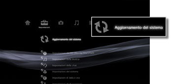

Impostazioni > Aggiornamento del sistema
Aggiornamento del sistema
Gli aggiornamenti del software possono includere patch di sicurezza, impostazioni e funzioni nuove o revisionate, nonché altre configurazioni che modificheranno il sistema operativo attuale. Si consiglia di verificare sempre la versione del sistema per accertarsi di utilizzare la versione del software di sistema più recente.
Per l'aggiornamento sono disponibili i due modi elencati sotto:
- Aggiorna tramite Internet
- Aggiorna tramite supporti di memorizzazione
Avvisi
- Non spegnere il sistema né rimuovere il supporto durante l'aggiornamento. Se si annulla un aggiornamento prima del completamento, il software di sistema può risultare danneggiato e potrebbe essere necessario riparare o cambiare il sistema.
- Durante gli aggiornamenti, il tasto di accensione situato sulla parte anteriore del sistema e il tasto PS sul controller wireless non sono attivi.
- In base al contenuto, potrebbe non essere possibile effettuare la riproduzione senza avere prima aggiornato il software di sistema.
Aggiorna tramite Internet
Scarica i dati aggiornati direttamente nel sistema da Internet. Viene scaricato automaticamente l'aggiornamento più recente.
1. |
Selezionare  |
|---|---|
2. |
Selezionare [Aggiorna tramite Internet]. |
 (Impostazioni) >
(Impostazioni) >  (Aggiornamento del sistema).
(Aggiornamento del sistema).Aggiorna tramite supporti di memorizzazione
Utilizza i dati aggiornati salvati su un disco, una Memory Stick™ o un altro supporto. Scarica i dati aggiornati da un sito Web utilizzando un PC. Per maggiori informazioni, visitare il sito Web SCE della propria regione.
Note
- I dati aggiornati possono essere anche presenti in alcuni dischi di gioco, in software video BD disponibili in commercio o in dischi di altro tipo. Quando si riproduce un disco che contiene dati aggiornati, viene visualizzata una schermata che fornisce indicazioni sul processo di aggiornamento. Per eseguire l'aggiornamento, seguire le istruzioni sullo schermo.
- Con alcuni modelli del sistema PS3™, per utilizzare supporti di memorizzazione è necessario disporre di un adattatore USB appropriato (non in dotazione).